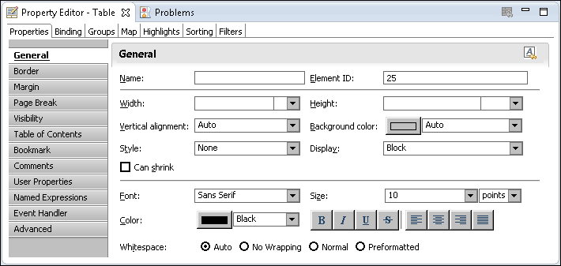
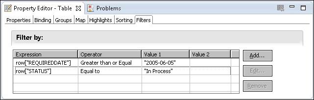
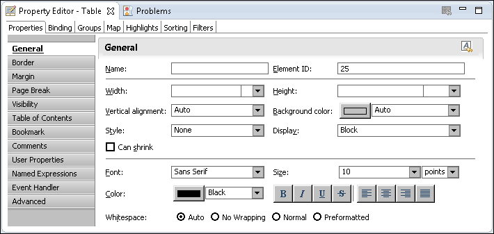
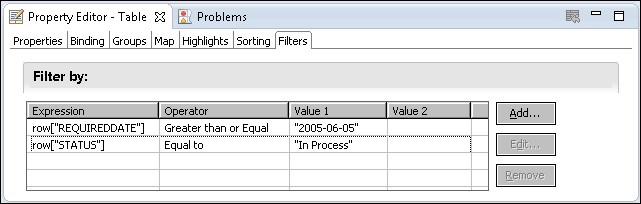

How to filter at the report element level These instructions assume you already created a report that uses an element to display data from a data set. 1 In the layout editor, select the table, cross tab, chart, or list from which to filter data. Property Editor displays the properties of the selected element, as shown in Figure 10-6.  Figure 10-6 Table properties 2 In Property Editor, choose the Filters tab. Property Editor displays the Filters page. 3 Choose Add to create a filter condition. 4 In New Filter Condition, specify the filter condition, then choose OK. For detailed steps, see the previous section. 5 Figure 10-7 shows some examples of filter conditions specified for a table.  Figure 10-7 Filter conditions for a table 6 Preview the report to verify the results. If you specified multiple filter conditions, the report displays only rows that match all filter conditions.
These instructions assume you already created a report that uses an element to display data from a data set.

